리눅스마스터-1급 (2011-03-12 기출문제)
1과목: 리눅스 실무의 이해
1. 리눅스의 특징에 대하여 설명한 것 중 틀린 것은?
- 리눅스는 shareware로 배포된다.
- 리눅스는 배포본 제작에 소요되는 비용을 받기도 한다.
- 리눅스는 수정이나 업그레이드에 누구나 참여가 가능하다.
- 리눅스는 소스코드가 공개되어 있다.
(정답률: 61%)

2. 운영체제의 구성요소 중에서 성격이 다른 것은?
- 시스템을 운영을 감시하는 프로그램
- 데이터 관리 프로그램
- 작업 관리 프로그램
- 사용자의 특정 문제 처리 프로그램
(정답률: 78%)
3. 리눅스의 특징을 나열한 것 중 거리가 가장 먼것은 어느 것인가?
- 실시간 페이지 적재 기능 제공
- 가상콘솔 기능 제공
- 동적 공유 라이브러리 제공
- 단일 사용자, 단일 작업 시스템
(정답률: 93%)
4. 리눅스의 이용이 빠르게 성장하고 있는 분야라고 볼 수 없는 곳은?
- 인터넷 서버 분야
- 임베디드 분야
- 데스크톱 분야
- 클러스터링 서버 분야
(정답률: 78%)
5. 레드햇 리눅스 배포 판의 패키지 관리 프로그램은 무엇인가?
- slackware
- rpm
- GNOME
- tar
(정답률: 84%)
6. 컴퓨터의 기본 5대 장치에 속하지 않는 것은?
- 입출력 장치
- 하드디스크
- 컴퓨터 메모리
- 중앙처리장치
(정답률: 61%)
7. 리눅스 시스템 중 사용자의 명령을 해독하고 시스템에 전달하는 명령어 해석기는 무엇인가?
- Shell
- Utility
- Kernel
- Application
(정답률: 80%)
8. lilo 부팅시 /etc/lilo.conf 설정파일 내용 중 ‘timeout=50’으로 설정하였을 때 키보드 무 입력시 자동부팅 대기시간을 몇 초로 설정한 것인가?
- 1초
- 5초
- 10초
- 50초
(정답률: 52%)
9. LILO를 제거하고자 할 때 사용할 수 있는 명령으로 알맞은 것은?
- lilo -u
- lilo -r
- lilo -d
- lilo -D
(정답률: 44%)
10. 리눅스 시스템을 바로 재부팅하여야 할 경우에 사용하는 명령으로 알맞은 것은?
- shutdown -h +10
- shutdown -r +10
- shutdown -h now
- shutdown -r now
(정답률: 82%)
11. 윈도우 매니저의 종류가 아닌 것은?
- twm
- WindowMaker
- FVWM
- WinManager
(정답률: 41%)
12. 다음 중 쉘의 종류가 아닌 것은?
- Bash
- Csh
- Korn shell
- Super shell
(정답률: 83%)
13. 쉘의 환경변수를 설정하고자 할 때 사용하는 방법으로 알맞은 것은?
- echo $PWD
- print TERM
- import /etc/passwd
- export path=/bin/local
(정답률: 54%)
14. 프로세스 정의를 설명한 것으로 볼 수 없는 것은?
- 특정 작업을 위하여 실행 중인 프로그램
- 커널에 등록되고 커널의 관리 하에 있는 작업
- 실행 중인 프로그램의 우선순위를 조정하는 작업
- 각종 자원들을 요청하고 할당받을 수 있는 개체
(정답률: 66%)
15. 다음 인터럽트들 중 오류에 의해 발생되는 것은?
- 클록 인터럽트
- 콘솔 인터럽트
- 하드웨어 검사 인터럽트
- 시스템 호출 인터럽트
(정답률: 42%)
16. 다음 중 OSI 참조모델에서 가장 하위계층에 해당 되는 것은?
- 네트워크계층
- 데이터링크계층
- 세션계층
- 전송계층
(정답률: 80%)
17. 네트워크 통신을 할 수 있는 기능을 제공하며 보통 LAN 카드라고 부르는 장비는 어느 것인가?
- NIC
- HUB
- Router
- Bridge
(정답률: 77%)
18. 현재 32비트 체계인 인터넷의 IP 주소의 버전은?
- IPv2
- IPv4
- IPv6
- IPv8
(정답률: 86%)
19. 리눅스가 지원하는 네트워크 인터페이스 종류가 아닌 것은?
- 이더넷 인터페이스
- PPP 인터페이스
- SLIP 인터페이스
- MIDI 인터페이스
(정답률: 60%)
20. 네임 서버의 질의 도구이며 기본 네임 서버의 변경도 가능한 명령은?
- ping
- netstat
- traceroute
- nslookup
(정답률: 73%)
2과목: 리눅스 시스템 관리
21. 다음과 같은 사용자계정 파일이 있을 때 ‘id bbb’ 명령의 실행결과로 알맞은 것은?
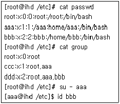
- uid=0(root) gid=0(root) groups=0(root),1(ccc), 2(ddd)
- uid=1(aaa) gid=1(ccc) groups=1(ccc), 2(ddd)
- uid=2(bbb) gid=2(ddd) groups=2(ddd)
- 결과가 출력되지 않는다.
(정답률: 64%)
22. 사용자 aaa가 로그인을 하지 못하도록 하고자 할 때 사용할 수 있는 방법이 아닌 것은?
- [root@ihd /]# userdel aaa
- [root@ihd /]# vi /etc/passwd 해서 로그인 이름이 aaa인 라인을 삭제하고 저장
- [root@ihd /]# passwd -l aaa
- [root@ihd /]# \rm -rf /home/aaa
(정답률: 60%)
23. 다음 중 사용자 그룹에 관련되는 명령어에 대한 설명이 틀린 것은?
- groups : 시스템 상에 정의된 그룹들을 모두 출력한다.
- chgrp : 파일이나 디렉터리가 속한 그룹을 바꾼다.
- groupmod : 시스템상의 그룹 정의를 변경한다.
- groupdel : 시스템상의 그룹을 삭제한다.
(정답률: 50%)
24. 다음은 passwd 명령을 사용해서 패스워드를 변경 할 때 나타날 수 있는 메시지와 그 의미가 잘못 연결된 것은?
- ‘BAD PASSWORD : is too similar to the old one’ : 과거의 패스워드와 유사하다.
- ‘BAD PASSWORD : it is too short’ : 새로운 단어가 너무 짧다.
- ‘BAD PASSWORD : it is too simplistic/systematic’ : 시스템에서 사용되고 있는 단어가 새로운 암호에 사용되고 있다.
- ‘BAD PASSWORD : it is based on a dictionary word’ : 사전에 있는 단어가 새로운 암호에 사용되고 있다.
(정답률: 71%)
25. 리눅스 시스템의 사용자 aaa가 소유하고 있는 /home/aaa/ccc.txt 파일에 대해 사용자 bbb는 읽기/쓰기권한을 가지게 하고, 사용자 ccc는 이 파일에 대한 읽기/쓰기/실행권한이 모두 없도록 하고자 할 때 다음 ( )안에 들어갈 내용으로 알맞은 것은?
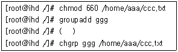
- groupadd bbb
- usermod -G ggg ccc
- usermod -G ggg bbb
- chgrp ccc /home/aaa/ccc.txt
(정답률: 66%)
26. 다음 보기와 같이 aaa.txt 파일에 대한 권한 설정을 변경하고자 할 때 그 결과가 다른 것은?
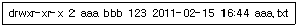
- chmod 615 aaa.txt
- chmod u-x,g-r aaa.txt
- chmod 777 aaa.txt
chmod u-x,g-rw,o-w aaa.txt - chmod 444 aaa.txt
chmod u+w,g-r,o+x aaa.txt
(정답률: 57%)
27. 현재 사용자 작업 디렉터리가 다음과 같을 때, 부모 디렉터리의 파일 리스트를 출력해 주기 위한 방법 중 틀린 것은?
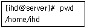
- cd /home 명령으로 디렉터리 변경 후 ls
- ls ../
- ls /home
- ls ./
(정답률: 67%)
28. 지워진 파일을 복구하기 위한 절차를 진행 순서 대로 알맞게 배열한 것은?
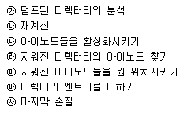
- ㉱-㉮-㉲-㉰-㉳-㉯-㉴
- ㉳-㉮-㉯-㉱-㉲-㉰-㉴
- ㉮-㉳-㉱-㉲-㉰-㉯-㉴
- ㉮-㉯-㉱-㉲-㉰-㉳-㉴
(정답률: 47%)
29. 다음 마운트와 관련된 파일들과 그 설명이 바르게 연결된 것은?
- /etc/mtab : 커널에 적재되어 있는 마운트 정보를 가지고 있는 파일
- /etc/fstab : 부팅되면서 자동으로 마운트 되는 파일시스템 테이블
- /proc/mounts : 커널이 인식 가능한 파일 시스템 타입의 정보를 가지고 있는 파일
- /etc/filesystems : 부팅되면서 수동으로 마운트 되는 파일시스템 테이블
(정답률: 69%)
30. 다음과 같이 파일시스템이 마운트되어 있을 때 /mnt/disk1에 마운트 되어 있는 /dev/hdb1을 언 마운트 할 수 없는 명령은?
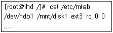
- umount /dev/hdb1
- umount -a
- mount -o unmount /dev/hdb1
- umount /mnt/disk1
(정답률: 56%)
31. 다음 중 /dev/hdb1을 리눅스 파일시스템으로 만들기 위해서 사용하는 명령어로 적절하지 못한 것은?
- mke2fs /dev/hdb1
- mkfs.ext3 /dev/hdb1
- mkfs /dev/hdb1
- mke3fs /dev/hdb1
(정답률: 46%)
32. 다음 리눅스시스템의 각 실행레벨(run level)에 대한 설명 중 틀린 것은?
- 실행레벨5 : 사용자 정의레벨로 정의될 수 있도록 비어 있는 레벨이다.
- 실행레벨2 : 다중사용자 모드, 단, NFS를 지원하지 않는다.
- 실행레벨3 : 다중사용자 모드, 텍스트 모드를 지원한다.
- 실행레벨1 : 단일 사용자모드, 관리자가 관리 목적으로 사용한다.
(정답률: 64%)
33. 다음 중 top 명령에 대한 설명으로 틀린 것은?
- CPU 프로세서의 현황을 보여주는 명령어이다.
- 시스템의 관리자 권한으로만 실행시킬 수 있다.
- 각 프로세스의 CPU 사용률과 메모리 사용률 등이 출력된다.
- top 명령어 실행 중 키보드 k를 누르면 강제 종료시킬 프로세스의 PID를 입력할 수 있다.
(정답률: 67%)
34. kill 명령과 killall 명령의 차이점과 공통점을 기술한 것 중 알맞은 것은?
- kill 명령과 killall 명령 모두 프로세스 번호를 사용하여 프로세스를 종료시킬 수 있다.
- kill 명령과 killall 명령 모두 프로세스 명령어를 사용하여 프로세스를 종료시킬 수 있다.
- kill 명령과 killall 명령 모두 한 명령어로 한 개의 프로세스만 종료시킬 수 있다.
- kill 명령은 프로세스 번호를 알아야 프로세스를 종료시킬 수 있고, killall 명령은 프로세스 번호를 몰라도 프로세스를 종료시킬 수 있다.
(정답률: 62%)
35. /etc/crontab 파일이 다음과 같을 때 다음 설명 중에 틀린 것은?
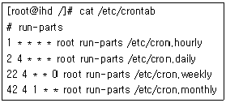
- /etc/cron.hourly는 한 시간마다 한 번씩, 매 시간 1분에 실행된다.
- /etc/cron.daily는 한 하루에 한 번씩, 매일 4시 2분에 실행된다.
- /etc/cron.weekly는 일주일에 한 번씩, 월요일 4시 22분에 실행된다.
- /etc/cron.monthly는 한 달에 한 번씩, 1일 4시 42분에 실행된다.
(정답률: 68%)
36. 다음 RPM에 대한 설명 중 틀린 것은?
- RPM은 레드햇 배포판에서만 사용되는 패키지 관리 툴이다.
- RPM을 사용하면 좀 더 편리하게 패키지를 설치/제거할 수 있다.
- RPM은 RedHat Package Manager의 약자이다.
- GPL(GNU General Public License)하에서 자유롭게 공개, 개발되고 있다.
(정답률: 61%)
37. rpm 명령어의 주요 옵션과 그에 대한 설명이 틀린 것은?
- rpm -i : 패키지 설치를 위한 설치모드 옵션이다.
- rpm -q : 패키지에 대한 질문을 위한 질문 모드 옵션이다.
- rpm -V : 패키지에 대한 검증을 위한 검증 모드 옵션이다.
- rpm -u : 패키지에 대한 업그레이드를 위한 업그레이드 모드 옵션이다.
(정답률: 46%)
38. 데비안 패키지 시스템에 대한 설명으로 틀린 것은?
- 데비안 패키지 파일의 확장자는 .deb 이다.
- 데비안 패키지 시스템을 관리하기 위해서 dpkg 명령을 사용한다.
- 패키지 설치에 필요한 의존성 문제를 해결할 수 있도록 해준다.
- 일반 사용자가 특별한 도구 없이 패키지를 설치 하거나 제거할 수 있다.
(정답률: 51%)
39. make가 사용하는 makefile에는 기본적인 규칙들의 나열로 이루어져 있다고 볼 수 있는데 다음 중 이 규칙의 구성요소에 속하지 않는 것은?
- 의존관계(dependency)
- 목표(target)
- 프로그램(program)
- 명령(command)
(정답률: 42%)
40. 다음 중 보기의 명령과 동일한 효과를 가지는 명령은 어느 것인가?
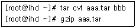
- tar cvf aaa.tar.gz bbb
- tar cvzf aaa.tar.gz bbb
- tar cvjf aaa.tar.gz bbb
- tar cgvf aaa.tar.gz bbb
(정답률: 55%)
41. 다음 중 일반적인 스카시(SCSI) 하드 디스크의 장치 이름으로 가장 적당한 것은?
- /dev/hda
- /dev/sda
- /dev/lp
- /dev/fd0
(정답률: 70%)
42. 레드햇 계열의 배포판에서 gpm을 이용하여 설정된 마우스를 사용할 때 관련파일이 저장된 위치로 가장 알맞은 것은?
- /etc/rc.d/init.d
- /etc/sysconfig/console
- /proc/misc
- /dev/input
(정답률: 29%)
43. 커널의 역할을 잘못 설명한 것은?
- 다양한 인터럽트 처리를 담당한다.
- 사용자의 명령을 처리하는 것을 담당한다.
- 프로세스의 처리 우선순위를 담당한다.
- 메모리나 저장장치 내의 운영체제의 주소 공간을 관리한다.
(정답률: 41%)
44. 일반적으로 리눅스 커널 컴파일 작업을 하려할 때 가장 적당한 디렉터리는?
- /usr/src/linux
- /usr/bin/linux
- /usr/etc/linux
- /usr/lib/linux
(정답률: 58%)
45. 커널 컴파일 전에 이전 컴파일 과정의 쓰레기 파일을 정리하고, 설정 등을 초기 상태로 만드는 명령은?
- make config
- make modules
- make mrproper
- make install
(정답률: 68%)
46. 리눅스에서 플로피디스크 이용 시 필요한 명령어와 관련이 가장 적은 것은?
- mkfs
- fdisk
- mount
- umount
(정답률: 48%)
47. 컴퓨터에 설치된 하드디스크들의 정보를 알아 볼 수 있는 파일은?
- /etc/hosts
- /etc/fstab
- /etc/hda
- /etc/init
(정답률: 50%)
48. 프린터 설정 유틸리티와 설정 파일로 적당한 것은?
- printinstall, /etc/printcap
- printconf, /etc/printcap
- printinstall, /etc/termcap
- printconf, /etc/termcap
(정답률: 71%)
49. 사운드 카드 설정 명령인 sndconfig을 이용할 때 설정 파일로 알맞은 것은?
- /etc/modules.conf
- /etc/hosts.conf
- /etc/devices.conf
- /etc/mtools.conf
(정답률: 54%)
50. 리눅스에서 지원하는 대부분의 터미널 정보가 저장되어 있는 파일은?
- /etc/fstab
- /etc/hosts
- /etc/printcap
- /etc/termcap
(정답률: 69%)
51. 리눅스의 로그파일 관리 툴인 logrotate가 할 수 있는 작업이 아닌 것은?
- 로그 파일의 내용 중 중요한 것만 보관한다.
- 로그 파일을 순환시킨다.
- 로그 파일을 압축해서 보관한다.
- 로그 파일이 지정한 용량만큼 찼을 때 다른 파일로 순환시킨다.
(정답률: 64%)
52. 시스템 로그 분석을 해야 하는 이유와 그 로그 파일이 짝지어진 것 중 틀린 것은?
- 리눅스 시스템에서 주고받은 메일에 대해 분석 하고자 한다. → /var/log/messages
- 부팅시 에러나 부팅시 장애 등을 확인하고자 한다. → /var/log/boot.log
- 웹사이트의 트래픽을 분석하고자 한다. → /usr/local/apache/logs/access_log
- cron의 동작을 분석하고자 한다. - /etc/cron
(정답률: 48%)
53. 리눅스 시스템의 관리자가 보안 관리를 위하여, 시스템에 대한 물리적인 접근을 제한하는 방법으로 부적절한 것은?
- BIOS의 부트 패스워드 이용한다.
- 부트 로더의 패스워드 보안기능을 사용한다.
- xlock을 이용하여 X윈도 화면을 잠근다.
- 항상 모든 사용자의 시스템 사용을 허용하지 않는다.
(정답률: 59%)
54. xinetd를 사용한 서비스 보안에서 xinetd의 기본적인 접근제어 방법이 아닌 것은?
- 내장된 접근제어 시스템을 통해 올바른 사용자만이 접근 가능하도록 한다.
- 방화벽을 우회할 수 있는 기능을 제공한다.
- IP 클래스에 따라 다른 서비스를 제공할 수 있다.
- 시간별 서비스 접속수를 제한할 수 있다.
(정답률: 62%)
55. 파일 시스템에 존재하는 특정 파일은 시스템에 보안 위험 요소가 될 수 있기 때문에 삭제하는 것이 바람직하다. 이러한 파일을 찾는 명령어와 그에 대한 설명이 올바른 것은?
- # find / -type f \( -perm -04000 -o -perm -02000 \) : 파일의 권한이 소유자가 읽을 수만 있거나 쓸 수만 있는 파일
- # find / -perm -2 -type l -ls : 시스템 사용권을 얻고 누구나 쓸 수 있는 파일
- # find / -nouser -o -nogroup -print : 주인있는 파일이나 그룹에 속해 있는 파일
- # find /home -name .rhosts -print : 파일 이름이 rhosts인 파일
(정답률: 47%)
56. ssh가 telnet, rlogin, rcp 등에 비해서 보안성이 우수한 이유는 무엇인가?
- ssh는 호스트 이름을 사용하지 않고, IP주소를 사용하여 서버에 접속한다.
- telnet, rlogin, rcp 등의 패킷은 스니핑을 당해 패킷이 노출될 수 있지만, ssh의 패킷은 스니핑을 당하지 않는다.
- ssh는 암호화하여 패킷을 전송한다.
- ssh를 사용하기 위해서는 유료서비스에 가입을 해야 한다.
(정답률: 64%)
57. 허가받지 않은 사용자가 ps, ls, login 등의 시스템 프로그램들을 동일한 이름의 다른 프로그램으로 바꿔치기 해서 비정상적인 동작을 하도록 하는 보안 침해 방법이 있는데, 이를 감지하기 위하여 사용할 수 있는 패키지로 알맞은 것은?
- sudo
- PAM
- tripwire
- IPChain
(정답률: 65%)
58. 다음 시스템 백업의 종류와 그에 대한 설명이 잘못 기술된 것은?
- 단순 백업 : 풀 백업 후에 변경분 백업을 주기적으로 실시한다.
- 변경분 백업 : 이전의 백업 후 변경된 파일들만 백업한다.
- 풀 백업 : 시스템 전체를 백업한다.
- 데이제로 백업 : 매월 초에 시스템 전체를 백업한다.
(정답률: 65%)
59. 데이터 파일뿐만 아니라 시스템 파일을 백업해야 하는 이유로 가장 거리가 먼 것은?
- 일반 사용자가 시스템의 운영에 필요한 파일을 지우거나, 수정하였을 경우 복원하기 위하여
- 관리자가 시스템의 중요한 파일들을 실수로 지우거나 수정하였을 경우 복원하기 위하여
- 시스템을 업그레이드할 경우 시스템의 설치를 쉽게 하기 위하여
- 시스템에 허락받지 않는 사용자가 침투하여 시스템의 중요한 파일들을 수정할 경우 이를 감지하기 위하여
(정답률: 33%)
60. 전통적인 백업 프로그램 dump의 특징으로 볼 수 없는 것은?
- 여러 개의 테이프에 백업할 수 있다.
- 백업이 기존 파일에 내용을 더하면서 수행될 수 있다.
- 모든 파일시스템 전체를 한번에 백업해야 한다.
- 파일에 대한 접근 권한, 소유자 등의 사항도 복구될 수 있다.
(정답률: 64%)
3과목: 네트워크 및 서비스의 활용
61. 인터넷 대중화 시대를 구현하는데 선봉에 선 브라우저로 일리노이 대학에서 무료로 배포한 것은 무엇인가?
- WWW
- HTML
- Mosaic
- Android
(정답률: 53%)
62. 웹 브라우저에 대한 설명 중 틀린 것은?
- 인터넷에 연결되어 있는 호스트 중에서 사용자가 지정한 호스트로 접속한다.
- 리눅스에서 사용하는 웹 브라우저로 파이어폭스, 크롬 등이 대표적이다.
- 서버의 요청에 의한 클라이언트 응답을 기본 메커니즘으로 한다.
- 대표적인 프로토콜로 HTTP가 있다.
(정답률: 56%)
63. 다음 명령어로 아파치 RPM 패키지 설치를 확인하려 할 때 ( )에 들어갈 옵션으로 알맞은 것은?
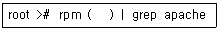
- -E
- -Q
- -ef
- -qa
(정답률: 65%)
64. PHP에 대한 설명으로 틀린 것은?
- 속도, 개발 편의성, 확장성이 매우 우수하다.
- 윈도우 운영체제의 ASP와 같은 역할을 수행한다.
- 다양한 데이터베이스 연동을 위한 API를 지원한다.
- 리눅스나 유닉스 계열에 사용하며, 윈도우 계열에서는 사용이 불가능하다.
(정답률: 78%)
65. 웹서버 설정 파일의 내용 중 다음과 같은 로그 메시지를 정의한 지시자 부분에 대한 설명으로 올바른 것은?
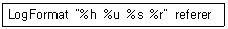
- %h는 헤더정보를 나타내는 지시자이다.
- %u는 요구한 URL를 나타내는 지시자이다.
- %s는 원격로그이름을 나타내는 지시자이다.
- %r은 요청한 내용의 첫 번째 줄을 나타내는 지시자이다.
(정답률: 30%)
66. 웹 호스팅 시스템을 구성하기 위해 고려할 사항 중 틀린 것은?
- 일일 파일 전송량을 제한해 주는 것이 좋다.
- 웹서버, 네임서버, 메일서버를 분산하여 운영하는 것이 바람직하다.
- 웹 호스팅의 경우 많은 사용자에 의한 자료의 누락현상이 발생할 수 있기 때문에 백업서버를 운영하는 것이 좋다.
- 네임서버는 다중도메인 설정, 포워딩 서비스 등 중요한 기능을 수행하므로 메모리와 하드 디스크이 용량을 늘리는 것이 좋다.
(정답률: 43%)
67. 데이터베이스 시스템인 PostgreSQL에 대한 설명 중 틀린 것은?
- 객체지향 기능을 갖고 있는 관계형 데이터 베이스 시스템이다.
- 사용자 정의 오퍼레이터와 타입, 함수, 액세스 메서드를 지원한다.
- 일반적으로 postmaster, postgres, backend의 세부분으로 구성되어 있다.
- 마이클 스톤브레이커에 의해 주도되었으며, 상업용이 아닌 교육연구차원에서 개발되었다.
(정답률: 31%)
68. JServ에 대한 설명 중 틀린 것은?
- 동적 모듈로 아파치에 설치할 때 아파치에서 제공하는 apxs라는 툴을 사용한다.
- 아파치에 직접 포함시켜 컴파일하거나 동적 로딩 모듈을 생성하여 사용할 수 있다.
- 웹 서버에서 바로 실행되므로 새로운 프로세스를 생성하는 CGI에 비해 효율성이 좋다.
- 동작확인은 컴파일 시, 생성된 jserv.conf 파일의 경로로 httpd.conf 파일에 AddModule 명령어로 경로를 지정하면 된다.
(정답률: 26%)
69. SSL 기능을 새로 포함하여 웹 서버를 재 구동시키기 위해 서버를 중지시킨 후 부팅해야 하는데 데몬이 apachectl 이라고 할 때 다음 ( )에 사용 되지 않는 명령어는 무엇인가?
- kill
- stop
- restart
- startssl
(정답률: 39%)
70. 마이크로소프트와 인텔 진영에서 사용한 프로토콜로 파일이나 디렉터리 및 주변장치를 공유하기 위한 GPL 정책을 따르는 공개 소프트웨어는 무엇인가?
- NFS
- SMB
- TCP
- CGI
(정답률: 50%)
71. 삼바서버의 환경설정에 대한 옵션 값 중 공유 디렉터리의 리스트를 보여주는 함수는 무엇인가?
- path
- guest ok
- write list
- browseable
(정답률: 34%)
72. 삼바 서버 보안의 4가지 모델 중 서버레벨에 대한 설명으로 알맞은 것은?
- 삼바 서버 보안의 기본 설정이다.
- 사용자 인증에 실패할 경우 사용자 레벨로 떨어지게 설계되어 있다.
- CD-ROM, 익명 FTP 등의 공유 디렉터리를 불특정 사용자들이 공유할 경우 유용하다.
- 삼바서버가 윈도우즈의 PDC나 BCD에 사용자 계정과 암호 쌍을 전송하여 인증을 위임하게 된다.
(정답률: 32%)
73. NFS 서버는 클라이언트가 항상 접속할 수 있도록 두 개의 데몬을 항상 작동해야 되는데 이 두 개의 데몬은 무엇인가?
- rpc.mountd, rpc.mapd
- rpc.mountd, rpc.nfsd
- rpc.exports, rpc.mapd
- rpc.exports, rpc.nfsd
(정답률: 41%)
74. NFS 서버에 접근하여 파일 시스템에 접속하는 방식을 무엇이라 하는가?
- mount
- access
- switch
- service
(정답률: 34%)
75. ProFTPD 서버에 대한 설명으로 틀린 것은?
- 서버 타입은 Standalone과 inetd로 선택할 수 있다.
- 환경설정파일은 proftpd.conf로 통합되어 있다.
- 일부 사용자의 ftp 접속을 제한할 수 있다.
- wu-ftp에 비해 보안상 취약하다.
(정답률: 57%)
76. FTP 서버 Umask 값을 022로 설정하였다면 디렉터리 허가권과 파일 허가권의 의미는 무엇인가?
- 디렉터리 허가권 : 770 파일 허가권 : 660
- 디렉터리 허가권 : 757 파일 허가권 : 646
- 디렉터리 허가권 : 755 파일 허가권 : 644
- 디렉터리 허가권 : 7⑤ 파일 허가권 : 604
(정답률: 71%)
77. ProFTPD 서버의 익명 FTP에 대한 설명으로 틀린 것은?
- 통상적으로 ID는 anonymous를 사용한다.
- 접속 시 패스워드는 자신의 이메일을 사용할 수 있다.
- 접속 시 현재 사용하는 사용자의 수는 확인 할 수 없다.
- 접속할 때 보여주는 별도의 메시지 파일을 만들 수 있다.
(정답률: 54%)
78. TCP/IP의 상위계층 프로토콜의 하나로 컴퓨터 간 전자우편을 전송하기 위한 RFC 821로 규정되어 있는 것은 무엇인가?
- PPP
- DHCP
- SMTP
- CCITT
(정답률: 73%)
79. 메일서버에 도착한 메일을 저장 및 전송을 담당하는 것으로 사용자가 메일을 읽게 되면 사용자의 컴퓨터로 메일이 다운로드 되게 하는 프로토콜은?
- POP3
- IMAP
- SMTP
- Sendmail
(정답률: 48%)
80. 메일서버 sendmail에서 해시 테이블을 만들기 위해 제공되는 유틸리티는 무엇인가?
- makemap
- make dep
- make config
- make install
(정답률: 55%)
81. sendmail.cf 설정파일의 섹션에 대한 설명 중 틀린 것은?
- Option 섹션은 sendmail의 환경을 정의하는 부분으로 사용옵션이 100여 개에 이른다.
- Trusted Users 섹션에 등록된 root, daemon, uucp 리스트는 절대로 변경하면 안 된다.
- Message Precedences 섹션은 메시지의 우선 순위를 숫자로 표현하며, 음수는 사용되지 않는다.
- Rewriting Rules에서는 입력된 주소를 패턴과 비교하여 일치하는 것을 정의된 규칙에 의해서 주소를 새로운 포맷으로 다시 작성한다.
(정답률: 29%)
82. 메일 사용자가 급격히 증가하게 되면 aliases 파일로 관리하기 어려워진다. 이때 관리를 위해 사용하는 MLM(Mailing List Manager)에 대한 설명으로 틀린 것은?
- GPL에 의거하여 무료로 배포되는 Majordomo라는 프로그램이 대표적이다.
- 관리자 측면에서 보면 메일링 리스트의 관리와 유지를 쉽게 해준다는 이점이 있다.
- 메일의 머리말, 꼬리말 기능을 지원하나, 스팸 메일로부터의 보호기능은 제공되지 않는다.
- 사용자 측면에서 보면 하나의 메일로 그룹의 모든 사용자에게 메일을 보내는 이점이 있다.
(정답률: 59%)
83. xinetd를 컴파일하여 설치하려고 한다. 이때 DOS 공격을 예방하기 위한 컴파일 옵션으로 필수적인 것은?
- --with-libwrap
- --with-loadavg
- --with-inet6
- --with-nls
(정답률: 38%)
84. 슈퍼데몬에 의해 telnetd를 구동하려고 한다. /etc/xinetd.d/telnet 파일의 ( )에 들어갈 내용으로 알맞은 것은?
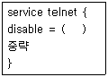
- no
- ok
- yes
- root
(정답률: 63%)
85. 슈퍼데몬 설정파일의 속성을 지정할 때, 동시에 작동할 수 있는 동일 유형 서버의 최대 수를 정의 하는 것은 무엇인가?
- cps
- instances
- max_load
- per_source
(정답률: 50%)
86. 네임서버에 사용되는 레코드에 대한 설명 중 틀린 것은?
- A : 도메인에 IP를 부여하는 항목
- MX : 해당 호스트의 메일 라우팅 경로 지시
- PTR : 서브 도메인 IP 주소
- CNAME : 도메인에 대한 별칭
(정답률: 58%)
87. DNS 서비스에 대한 설명 중 틀린 것은?
- DNS 서버는 주네임 서버, 보조네임서버, 캐싱 서버로 나눌 수 있다.
- IP 주소를 호스트 명으로 변경하는 서비스이다.
- 모든 DNS는 수평구조를 갖고 클라이언트에 응답한다.
- 리눅스에서 가장 보편적인 인터페이스 프로그램은 BIND이다.
(정답률: 50%)
88. 웹 서버 도메인이 ihd.or.kr이며, IP 주소가 10.18.1.100일 경우, DNS 메인 설정 파일인 named.conf 에 역방향 존 파일을 구성하기 위한 설정 내용으로 알맞은 것은?
- 10.18.1.in-addr.arpa
- 1.18.10.in-addr.arpa
- 10.18.1.ihd.or.kr.rev
- 1.18.10.ihd.or.kr.rev
(정답률: 41%)
89. 사용자가 웹 브라우저를 이용해 서핑을 할 때 느린 속도를 보완해 주기 위해 캐시 서비스를 제공하는 서버는 무엇인가?
- NIS
- SMTP
- DHCP
- PROXY
(정답률: 69%)
90. 프록시 서버 squid의 설정 파일(squid.conf) 설정에서 캐시에 사용될 메모리의 최대 크기를 100M로 설정하려고 한다. 설정을 하기 위해 필요한 지시자는 다음 중 어느 것인가?
- memory_size 100 MB
- cache_memory 100 MB
- cache_mem 100 MB
- max_mem_size 100 MB
(정답률: 40%)
91. NIS 서버에 대한 설명으로 틀린 것은?
- NIS는 Yellow Pages를 줄여서 YP라고도 불린다.
- 마스터 서버와 슬레이브 서버로 구성되며 협동적인 형태로 사용할 수 있다.
- 네트워크를 통하여 알려진 네트워크상의 모든 기계에게 정보를 제공하는 서비스이다.
- NIS 클라이언트는 필요한 경우에만 서버의 DBM 데이터베이스에 저장된 정보를 읽는다.
(정답률: 30%)
92. NIS의 여러 프로그램 중에서 가장 중요하며 항상 실행 중에 있어야 하는 프로그램은 어느 것인가?
- ypswitch
- yppoll
- ypmatch
- ypbind
(정답률: 60%)
93. DHCP 서버에서 MAC 주소와 IP 주소를 변환 해주는 프로토콜은 무엇인가?
- ARP
- ICP
- TCP
- ASP
(정답률: 67%)
94. DHCP 서버에서 IP 범위를 설정하는 인자는 무엇인가?
- client
- range
- router
- broadcast
(정답률: 60%)
95. CVS에 대한 설명 중 틀린 것은?
- 프로그램 소스나 문서 파일 버전 관리를 도와주는 프로그램이다.
- /etc 아래에 들어가는 설정 파일을 백업하는 용도로도 사용할 수 있다.
- 작업공간마련 -> 저장소초기화 -> 프로젝트초기화 -> 프로젝트작업 순으로 수행한다.
- 공동 프로젝트에서 버전 관리를 통해 파일의 중복이나 변경에 의한 오류를 방지할 수 있다.
(정답률: 38%)
96. TCP DUMP와 같이 네트워크상에서 패킷 교환을 도청하는 과정은 무엇인가?
- Sniffing
- Routing
- Spoofing
- Scanning
(정답률: 67%)
97. 버퍼 오버플로에 대한 설명 중 틀린 것은?
- 모리스 웜 사건 때 그 심각성이 부각되었다.
- 버퍼 오버플로를 이용하여 임의의 명령어를 수행할 수 있다.
- 프로그램 실행 과정에서 디스크와 관련된 개념을 이용한 공격 기술이다.
- 지정된 버퍼보다 더 많은 데이터를 입력하여 프로그램이 비정상적으로 동작하게 한다.
(정답률: 47%)
98. IDS에 대한 설명 중 틀린 것은?
- 접속하는 IP를 기반으로 침입을 차단한다.
- 탐지뿐만 아니라 추적하는 기능까지 제공한다.
- 탐지하는 방식에 따라 오용 탐지와 변칙 탐지로 나눌 수 있다.
- 정보수집, 정보가공 및 축약, 분석 및 침입탐지, 보고 및 조치 단계로 구성된다.
(정답률: 31%)
99. 방화벽의 부가적인 기능이 아닌 것은?
- VPN
- NAT
- NMS
- DMZ
(정답률: 30%)
100. Honeypot에 대한 설명 중 틀린 것은?
- 컴퓨터 해킹의 위험성을 미리 알려주는 경보 예측시스템이다.
- 매사추세츠공대 데이비드 클록이 처음으로 제안한 시스템이다.
- 컴퓨터 프로그램에 침입한 크래커를 탐지하는 가상 컴퓨터이다.
- 시스템에 해커가 접근하면 해커의 동작을 모니터링 하여 각종 정보를 취득할 수 있다.
(정답률: 37%)